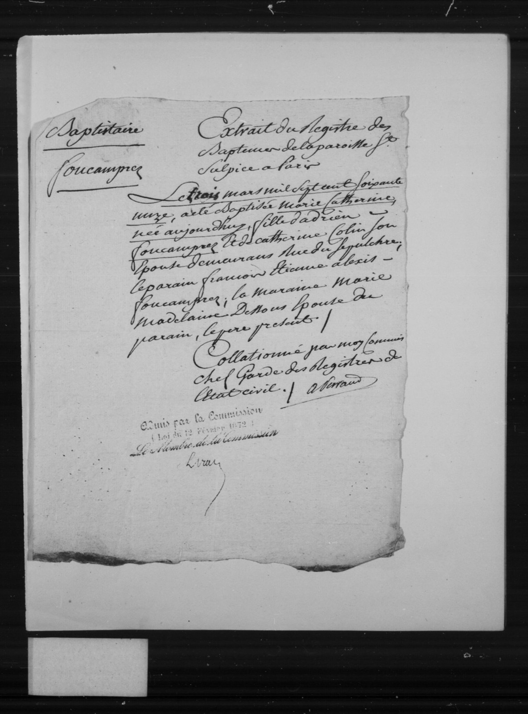

Registre paroissial · 3 mars 1771
Extrait de baptême de Marie Catherine Foucamprez, paroisse Saint-Sulpice, 3/03/1771 (pièce de reconstitution déposée par la Caisse Lafarge)
Ce document établit
- Marie Catherine Foucamprez, née le 3 mars 1771, est baptisée le même jour à Saint-Sulpice (Paris) vérifié A0555
« « Le trois mars mil sept cent soixante onze, a été baptisée Marie Catherine, née aujourd'huy » »
- Marie Catherine Foucamprez est fille d'Adrien Foucamprez et de Catherine Colin, son épouse vérifié A0556
« « fille d'adrien Foucamprez et de Catherine Colin son épouse » »
- En mars 1771, Adrien Foucamprez et Catherine Colin sont mariés et demeurent rue du Sépulcre, paroisse Saint-Sulpice, à Paris vérifié A0557
« « Catherine Colin son épouse demeurans Rue du Sépulchre » »
- Au baptême de Marie Catherine Foucamprez (1771), le parrain est François Étienne Alexis Foucamprez, la marraine Marie Madeleine Dettous [?], épouse du parrain ; le père est présent vérifié A0558
« « le parain François Étienne alexis Foucamprez ; la maraine Marie Madelaine Dettous [?] Épouse du parain, le père présent » »
- Hypothèse : François Marin Gibert et Marie Catherine Foucamprez étaient tous deux « têtes » d'actions de la Caisse Lafarge (tontine viagère créée en 1791), ce qui expliquerait que la Caisse ait conservé leurs extraits de baptême et l'extrait de décès de l'épouse non vérifié A0566
« chemise : « Pièce déposée par M : Caiss. Lafarg. » »
Transcription
recherches/generation-5/gibert-bosse/transcriptions.md (F03)
Personnes concernées
Extrait postérieur à 1792, date de délivrance non portée ; admis par la Commission (loi du 12/02/1872)
Continuer
Toutes les archives →Document précédentRelevé collaboratif Geneanet 6182, fiche : notaire Garcerand Charles, mariage LEGRAND Jean Pierre × GIBERT Geneviève, 16/04/176516 avril 1765Document suivantRelevé collaboratif Geneanet 6182, fiches : mariage GIBERT Jean Baptiste × RAISON Marie Geneviève, 22/05/1776 (RE/XCI/10, notaire Baron) et inventaire GIBERT Jean Baptiste, 10/01/1785 (RE/XCI/12, notaire Lefebvre)1776-05-22/1785-01-10